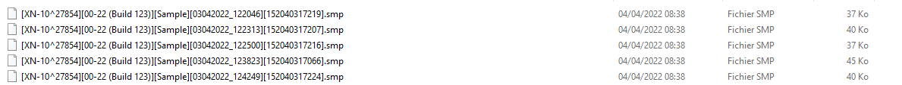
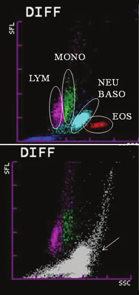

SEPIA — Sepsis Early Prediction by Intelligence Artificielle.
| Brique | Choix | Pourquoi |
|---|---|---|
| Langage | Python ≥ 3.11 | écosystème data mature, packaging simple |
| Compute | Polars + DuckDB | rapide, columnar Arrow natif, sans serveur |
| Stockage | Parquet local | columnar, compressé, typé strict |
| Partitionnement | Hive (year= / month= / run_id=) | lecture sélective par partition |
| Orchestration | Makefile | suffit à l'échelle — pas d'Airflow / Dagster |
| Versioning | Git | reproductibilité des analyses |
| Tests | pytest | discipline minimale, cross-checks réels |
| Conteneurs | aucun | user-space, pas de droits admin requis |
Langage unique de bout en bout, choisi pour son écosystème data mature et la lisibilité du code.
Tout le pipeline — parsing binaire .smp, transformations, tests — tient en Python pur, sans dépendance système exotique à installer sur le poste.
Bibliothèque de manipulation de tableaux de données, écrite en Rust : nativement multicœur et bien plus rapide que pandas sur de gros volumes.
Traite sans difficulté les ~600 paramètres × 49 675 hémocultures en mémoire. Son évaluation différée (lazy) optimise les chaînes de transformation.
Base analytique « embarquée » — comme SQLite, mais orientée colonnes.
Elle lit directement les fichiers Parquet sans import préalable : on écrit du SQL sur le lac de données local. Idéale pour l'exploration ad hoc et les contrôles qualité croisés.
Format de fichier columnar : les données sont rangées par colonne, compressées et typées.
Lecture sélective (on ne charge que les colonnes utiles), gain d'espace ×5 à ×10 face au CSV, et schéma auto-décrit. C'est le standard de fait des lacs de données.
Standard de représentation des données en mémoire, partagé entre outils.
Il permet à Polars et DuckDB d'échanger des tables sans copie ni sérialisation (zéro-copie) — d'où des transitions quasi instantanées d'une étape à l'autre.
year= / month= / run_id= — lecture sélective sans tout chargerConvention de nommage des dossiers — year=2024 / month=03 / run_id=… — qui encode les filtres directement dans l'arborescence.
Le moteur ne lit que les partitions concernées par une requête : accès rapide sans charger toute la table.
Versioning du code et de la table de correspondance (Rosetta Stone).
Chaque analyse référence un commit précis : on peut rejouer exactement le pipeline tel qu'il était à une date donnée — traçabilité complète des évolutions de mapping.
make rejoue le pipelineOrchestrateur léger, déjà présent sur tout poste Unix.
Il décrit un graphe de dépendances entre étapes : make ne rejoue que ce qui a changé. Pas besoin d'Airflow ni d'orchestrateur lourd pour un pipeline local.
28 tests techniques valident les briques unitaires : paths, hash, parsing du nom, IO Parquet, idempotence du log.
14 tests métier valident la chaîne SMP de bout en bout — dont 9 sur fichiers .smp réels (DATA_exemple), avec des validations biologiques (HGB dans plage, NEUT dans plage…).
Principe : bronze = raw. La conversion en valeur clinique (application du Divisor) est faite en silver — ce qui permet des corrections rétroactives sans re-parser les fichiers sources.
Le pipeline ne lit jamais directement un instrument : il consomme des fichiers déjà déposés. Aucune écriture en retour.
Chaque tube produit un fichier .smp — un binaire MFC CArchive, non documenté. Aucune librairie ne le lit. Le parser a été ré-implémenté intégralement, en Python pur.
SMP\0File Ver1.0\0CData_ITEM.smp.Une table versionnée à trois colonnes : Item_ID (code Sysmex), Parameter_Name (nom clinique), Divisor (facteur d'échelle, appliqué en silver). 12 cross-checks pytest valident les mappings critiques.
Item_ID 4097 (HGB) = valeur brute 1622, Divisor 100 → 16,22 g/dL en silver.
Volumes cibles : ~30-100 k fichiers .smp sur le Synology · ~50 k lignes SIL hémoc sur 2020-2026 · quelques milliers de tubes éligibles par étude après filtrage.
| 1 · Listing rapide | os.walk() → (path, size, mtime) en quelques secondes même sur 30 k fichiers |
| 2 · Comparaison au log | la table ingestion_log filtre les fichiers déjà connus |
| 3 · Hash + ingestion | SHA-256 calculé uniquement sur les fichiers nouveaux ou modifiés |
Run « à vide » = 5-10 s · run mensuel = quelques minutes · rattrapage historique = plusieurs heures, une seule fois.
_source_file — nom du fichier source_source_hash — SHA-256, intégrité_ingested_at — timestamp UTC_run_id — identifiant du run pipeline_pipeline_version — version sémantique du codePour n'importe quelle ligne silver ou gold, on peut remonter au fichier source exact et à la version de code qui l'a produite.
| ID prélèv | IPP | Service | Code pat. | Sexe | Âge | Heure | Résultat 1 | Délai 1 | Germe 1 | Résultat 2 | Délai 2 | Germe 2 |
|---|---|---|---|---|---|---|---|---|---|---|---|---|
| A2400000 | 9000000001 | URGENCES POLYV. | EXEAlic | F | 54 | 08:15 | Négatif | 120.4 | — | Négatif | 120.5 | — |
| A2400000 | 9000000002 | RÉANIMATION POLY | EXEPaul | M | 67 | 14:32 | Positif | 12.8 | Escherichia | Positif | 13.1 | Escherichia |
| A2400000 | 9000000003 | CARDIO HC AG | EXEMarc | M | 73 | 21:05 | Positif | 34.2 | Staphylococcus | Négatif | 119.8 | — |

Toutes les captures montrent des données pseudonymisées ou des fixtures synthétiques. Aucun identifiant patient direct n'apparaît.
| Catégorie | Lignes | % |
|---|---|---|
| Que des flacons négatifs | 41 233 | 83,0 |
| Que des germes contaminants | 2 608 | 5,3 |
| ≥ 1 germe pathogène strict | 3 039 | 6,1 |
| Zone grise (viridans / générique) | 275 | 0,6 |
| Lignes sans aucun résultat | 2 512 | 5,1 |
| Total | 49 675 | 100 |
| Patients distincts (via IPP) | |
|---|---|
| Avec ≥ 1 pathogène strict | 1 775 |
| Total (IPP renseigné) | 21 033 |
| % avec germe pathogène | 8,4 % |
3 039 lignes pathogènes pour 1 775 patients : certains ont plusieurs prélèvements positifs sur un même épisode.
Contaminants — staphylocoques à coagulase négative, Micrococcus, Kocuria, Corynebacterium, Cutibacterium, Bacillus sp, Brevibacterium.
Pathogènes stricts — BGN & entérobactéries, S. aureus (SARM inclus), strepto β-hémolytiques, S. pneumoniae, entérocoques, Listeria, Neisseria, levures, anaérobies stricts.
Zone grise & points à valider — viridans / libellés génériques · Bacillus cereus (8 cas) et anaérobies non identifiés à reclasser.
| Localisation des données | Poste utilisateur ou serveur hospitalier local — jamais cloud |
| Régime juridique | MR-004 CNIL — recherche non interventionnelle sur données de soin |
| Identifiants patients | Pseudonymes (numero_dossier, IPP), restent en zone hospitalière |
| Données dans Git | Aucune — .gitignore strict (*.smp, *.fcs, *.parquet, *_hemoc.csv) |
| Outils LLM (Claude, etc.) | Jamais de données patient — fixtures synthétiques uniquement |
| Sections PII des .smp | Identifiées (Patient / Doctor / Ward), jamais lues par le parser |
| Traçabilité d'audit | 5 colonnes techniques par ligne bronze (sha256, run_id, version) |
.smp réels parsés avec des valeurs cliniquement cohérentes.
Le POC actuel entraîne un modèle sur des métriques déjà calculées par l'automate — les ~600 paramètres du fichier .smp.
Ces métriques restent dépendantes du gating de l'instrument : sur certains profils cellulaires anormaux, elles deviennent peu fiables, voire impossibles à calculer (flèches).
